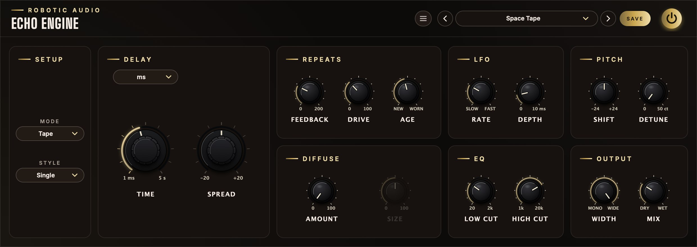

Echo Engine
A stereo delay with a personality. Three machines in one (clean, tape and lo-fi), four ways to wire left and right, and a feedback loop you can pitch, filter, smear and overload until echoes turn into shimmer, clouds or chaos.
- Stereo delay
- 3 modes: Clean · Tape · Lo-Fi
- 4 styles
- 1 ms to 30 s, or tempo-synced
- Pitch-shifted repeats
- Diffusion
- Feedback to 200 %
- 15 factory presets
- AU · VST3 · Standalone

Quick start
From a plain echo to something of your own.
Load a preset
Use the arrows or the list in the header. Space Tape, Ping-Pong Eighths and Shimmer show three very different sides.
Set the time
Turn the big TIME knob. To lock it to your song, change the menu above it from ms to Note, Dotted or Triplet.
Set the repeats
FEEDBACK decides how many echoes you get. Past 100 % they grow instead of fading.
Pick a machine
MODE: Clean for transparent copies, Tape for warm, wobbling ones, Lo-Fi for crunchy early-digital ones. AGE wears it out.
Go wide
STYLE: Dual and Ping-Pong give left and right their own times. In Single, SPREAD offsets them by a few milliseconds.
Blend
MIX balances the echoes against the dry sound. On a send, set it to 100 %.
The window
Setup and time on the left, then six cards in the order you would shape the echoes.
- Header
- The preset bar (previous, next, the list, SAVE), the power button (bypass) and the menu (three lines) with this manual. Click the logo for the version and credits.
- Setup
- Mode, the character of the machine, over Style, how left and right relate.
- Delay
- Two large knobs, each under a menu. The left is always the delay time. The right changes with the Style: Spread, the right-hand time, or Ratio.
- Repeats
- Feedback, Drive and Age.
- LFO
- Rate and Depth of a slow wobble on the delay time.
- Pitch
- Shift, in semitones, and Detune, in cents.
- Diffuse
- Amount and Size of the smear that turns echoes into a wash.
- EQ
- Low Cut and High Cut for the echoes.
- Output
- Width of the echoes and the dry/wet Mix.
Signal flow
A delay line inside a loop, and everything else placed inside that loop.
Follow the loop clockwise from the +. The input (pushed by Drive) and the returning feedback are added together and recorded into the delay line, through the saturation of the chosen Mode. After the delay time the sound is read back, optionally pitch-shifted, worn by the Mode's character, filtered and diffused. That is one echo.
From there it goes two ways: out to your ears, through Width and Mix, and back round the loop, scaled by Feedback, to become the next echo.
There are two of everything in the picture, one for the left and one for the right. How the two feed each other is the Style. The dry sound never passes through any of it.
Mode
Which machine the echoes are recorded on.
The Mode decides how the delay line treats what is written into it and what comes back out. It sets the curve of the saturation, and what AGE means.
What each machine does to the level it records: output against input, with input up to three times full scale. The dashed line is an untouched signal.
Clean rounds off smoothly and evenly. Tape rounds off too, but lopsidedly: the upper half of the wave has less room than the lower, which adds the even harmonics that make tape sound warm. Lo-Fi is a straight line until it hits the ceiling and then stops dead, like a converter running out of numbers.
Nothing can be recorded louder than the ceiling. That is what keeps the loop under control when Feedback goes past 100 %.
- Clean
- Transparent, hi-fi repeats: each echo is a faithful copy, only quieter. The soft limiter is gentle at normal levels and steps in firmly only when Drive or Feedback push hard. Age does nothing and is greyed out.
- Tape
- A tape echo. What is recorded is compressed (3:1 above −12 dB, quick to grab and slow to let go), given the head bump of a playback head (a gentle +2 dB around 100 Hz) and saturated lopsidedly. Every pass also loses a little treble. Loud echoes come back rounder and thicker; the low end blooms as the repeats pile up.
- Lo-Fi
- An early digital delay. The loop clips hard, and Age lowers the quality of the "converter": fewer samples per second and fewer bits per sample, giving the gritty, ringing aliasing and the grainy tails of 1980s rack units.
What Age does
| Mode | At 0 % | Turning it up |
|---|---|---|
| Clean | Nothing: the knob is greyed out. | |
| Tape | A fresh, steady machine: highs to 16 kHz, no wobble, no hiss. | Wow: the speed drifts slowly and randomly, bending the pitch of the echoes. Flutter: a fast, fine shake on top. Hiss creeps in. The highs dull, down to 4.5 kHz when fully worn. |
| Lo-Fi | Clean: full sample rate and bit depth. | The sample rate falls towards 4 kHz and the bit depth towards 6 bits. Echoes get crunchy, then telephone-like, then broken. |
Like everything in the loop, Age compounds: each repeat is recorded on the worn machine again, so the damage grows from echo to echo.
Style
How the left and right delay lines are wired together.
Single · Dual
Each side feeds back into itself. Left stays left, right stays right.
Ratio
Both sides share one feedback: the average of the two, sent back to both.
Ping-Pong
The input goes in on the left only. Left feeds right, right feeds left.
- Single
- One time for both sides: a classic mono-compatible echo. The second big knob is Spread, which makes the right side later than the left (or earlier) by up to 20 ms, split evenly around the set time. A few milliseconds are enough to pull the echoes out of the centre and make them wide.
- Dual
- Two independent delays. The second big knob is the right-hand time, with its own ms / Note / Dotted / Triplet menu. Set a quarter note on one side and a dotted eighth on the other for interlocking rhythms.
- Ratio
- The right-hand time is a percentage of the left (the Ratio knob, 1 to 100 %), so both follow the Time knob together. The feedback is shared, so each side's echoes reappear in the other at the other's time: the pattern fills in and becomes denser with every round. Ratios that are not simple fractions, like 61.8 %, never line up and give an even, rolling scatter.
- Ping-Pong
- The input is summed to mono and enters the left line only; the feedback is crossed. The first echo is on the left after the left time, the next on the right after the right time, and so on, bouncing. With equal times it is an even bounce; with different times it limps. Width at 0 % cancels the bounce.
Delay time
Free in milliseconds, or locked to the song.
- Time mode
- The menu above each time knob. ms: a free time. Note, Dotted, Triplet: a note value at the host's tempo; dotted is one and a half times as long, triplet two thirds. ms · Note · Dotted · Triplet
- Time (ms)
- The delay time. The knob gives the short times the most travel. 1 ms … 5 s
- Time (synced)
- The note value, shown the way its mode writes it: 1/8, 1/8. (dotted) or 1/8T (triplet). 1/64 … 8/1
- Spread
- Single style: right minus left. −20 … +20 ms
- Time R
- Dual and Ping-Pong: the right-hand time, with its own mode menu. as Time
- Ratio
- Ratio style: the right-hand time as a share of the left. 1 … 100 %
Synced times follow the host's tempo, tempo changes included. Without a host tempo (the standalone app) they use 120 BPM. However long the note value and however slow the song, a delay is never longer than 30 seconds.
Changing the time while it plays
The delay time does not jump: it glides to a new value over about 80 ms, the way a tape machine's motor takes a moment to change speed. While it glides, everything already in the delay line is played faster or slower, so the echoes bend in pitch and then settle. Sweep the Time knob during a held note for the classic tape-echo dive and rise.
Very short times, from 1 to about 30 ms, are no longer heard as echoes. With some feedback they become a comb filter: a metallic, pitched resonance. Add the LFO for flanging and chorus.
Repeats
How many echoes, how hard they are hit, and how worn the machine is.
- Feedback
- How much of each echo is sent round the loop to make the next. At 0 % there is a single echo. Below 100 % each echo is quieter than the last. At 100 % they would go on for ever; above it they grow. 0 … 200 %
- Drive
- Pushes the input into the Mode's saturation before it is recorded, like turning up the record level: up to ten times (+20 dB) louder going in, with the level partly brought back down afterwards. At 0 % it is out of the way. Drive colours only the echoes; the dry sound stays clean. 0 … 100 %
- Age
- How worn the machine is; what that means depends on the Mode. Greyed out in Clean. 0 … 100 %
How long the echoes last
| Feedback | Each echo is | Echoes until inaudible (−60 dB) |
|---|---|---|
| 25 % | 12 dB quieter | 5 |
| 40 % | 8 dB quieter | 8 |
| 55 % | 5 dB quieter | 12 |
| 70 % | 3 dB quieter | 19 |
| 90 % | 1 dB quieter | 66 |
| 100 % and up | the same, or louder | they do not stop |
The filters, the tape's treble loss and the diffusion take a little away on every round as well, so in practice the echoes die somewhat sooner than the table says.
Past 100 %: self-oscillation
Above 100 % every round is louder than the one before. In a plain digital delay that would run away to full-scale noise. In Echo Engine the recording stage cannot go above its ceiling, so the loop grows until the Mode's saturation holds it there and then sustains: a dense, howling, endlessly regenerating texture that keeps going after the input stops. Tape compresses and smooths it into a roar; Lo-Fi turns it into a buzzing wall; Clean holds it most politely. Bring Feedback back under 100 % to let it die away.
LFO
A slow wobble on the delay time.
- Rate
- The speed of the wobble. Greyed out while Depth is 0. 0.05 … 10 Hz
- Depth
- How far the delay time swings either side of its setting. 0 … 10 ms
A smooth (sine) oscillator moves the point where the delay line is read. A moving read point changes the pitch of what is read, slightly up while the delay shortens and slightly down while it lengthens, so the echoes gain a gentle vibrato that thickens them and sets them apart from the dry sound.
The right side's wobble runs a quarter of a cycle apart from the left's. Left and right are therefore never detuned the same way at the same moment, which turns the vibrato into stereo movement.
| Setting | Effect |
|---|---|
| Depth 0.2 ms, Rate 0.5 Hz | The default: barely audible life in the repeats. |
| Depth 1–3 ms, Rate 0.3–1 Hz | Chorused, drifting echoes. |
| Time 5–15 ms, Depth 2–5 ms, Feedback 50–80 % | Flanger. |
| Time 15–30 ms, Depth 2–4 ms, Feedback 0 % | Chorus. |
| Depth 5–10 ms, Rate 4–8 Hz | Seasick vibrato. |
In Tape mode, Age adds its own, random movement on top of the LFO: wow and flutter.
Pitch
Echoes that climb, fall or shimmer.
- Shift
- Transposes the echoes, in whole semitones. Because the shifter is inside the loop, every repeat is shifted once more than the one before. −24 … +24 st
- Detune
- Fine tuning that pushes the left side up and the right side down by this many cents. It widens the echoes and, round the loop, makes them drift apart. 0 … 50 ct
With Shift at +12, the first echo is an octave above the note, the second two octaves, the third three: a staircase. At +7 it climbs in fifths; at −12 it sinks an octave at a time. Combine a shift with Diffusion and a high Feedback, and the separate steps blur into a halo of rising harmonics above the sound: shimmer.
How it shifts
The shifter is granular. It chops the echo into short, overlapping grains (about 80 ms each) and plays each one faster or slower, fading every grain in and out. The grains start at slightly random moments, so the overlaps never line up the same way twice: the copies blur into a soft, chorus-like shimmer instead of the metallic ringing a simpler shifter produces, and the attacks of notes stay intact.
The shifter needs a moment to do its work. Echo Engine reads the delay line that much earlier to make up for it, so shifted echoes still land exactly on time. With Shift at 0 and Detune at 0 the shifter is switched out entirely and costs nothing; it fades in and out when you turn it on and off.
Diffuse
Smears each echo, from a softened edge to a reverb-like cloud.
- Amount
- How much of the smear is blended in, and how strong it is. 0 … 100 %
- Size
- How far each echo is spread out in time: small is tight and slightly metallic, large is spacious. Greyed out while Amount is 0. 0 … 100 %
The diffuser is a chain of six all-pass filters. An all-pass leaves the balance of low and high frequencies alone but delays different parts of the sound by different amounts, so a sharp click comes out as a short burst of many smaller ones. The six stages have lengths that are not multiples of one another (from about a millisecond at the smallest Size to tens of milliseconds at the largest), and the right side's are 7 % longer than the left's, so the smear is different in each ear.
Because it sits in the loop, each repeat is smeared again. A little softens the attack of the echoes so they sit behind the dry sound. A lot, with a high Feedback, dissolves the separate repeats into a continuous wash: with a short delay time it behaves like a small reverb, with a long one like a cloud that swells after each note.
EQ
Two gentle filters that shape how the echoes age.
- Low Cut
- Removes lows from the echoes, at 6 dB per octave. Keeps the repeats from muddying the bass. 20 Hz … 2 kHz
- High Cut
- Removes highs from the echoes, at 6 dB per octave. Makes them darker and further away. 1 … 20 kHz
The slopes are gentle on purpose. Both filters are in the loop, so a repeat that has been round three times has been filtered three times: the first echo is only slightly darker, and each one after it is darker and thinner still. This is how echoes behave in the real world and in tape machines, and it is why a filtered delay sits behind a vocal instead of fighting it.
A High Cut around 3–6 kHz with a Low Cut around 200–400 Hz gives the band-limited, "telephone" repeats of vintage units. Opening both fully gives modern, full-range copies.
Output
Where the echoes sit, and how loud.
- Width
- The stereo width of the echoes: 100 % leaves left and right as they are, 0 % folds them to the centre. It works on the echoes only and never narrows the dry sound. 0 … 100 %
- Mix
- The balance between the dry sound and the echoes: 0 % is dry only, 100 % echoes only. As the echoes come up, the dry sound goes down. 0 … 100 %
As an insert, a Mix of 20–40 % is typical. On a send or return track, set Mix to 100 %, so the track carries only echoes, and set the amount with the send level.
Echo Engine adds no latency. It tells the host how long its echoes take to die away, so a bounce or a freeze does not cut the tail off.
Presets
Fifteen starting points.
| Preset | What it is | Key settings |
|---|---|---|
| Default | A plain tape echo. | Tape, Single, 400 ms, feedback 40 % |
| Space Tape | The long, dark, saturated echo of a vintage tape unit. | Tape, 340 ms, feedback 55 %, age 45 %, high cut 7 kHz |
| Slapback Tape | One quick repeat: rockabilly vocals and guitars. | Tape, 95 ms, feedback 8 % |
| Clean Quarter | Transparent quarter-note echoes. | Clean, 1/4, feedback 35 % |
| Dotted Eighth | The galloping guitar delay. | Clean, 1/8 dotted, spread +10 ms |
| Ping-Pong Eighths | Even bounces, left and right. | Clean, Ping-Pong, 1/8 both sides |
| Dual Rhythm | Two interlocking times. | Tape, Dual, 1/4 left, 1/8 dotted right |
| Golden Ratio | A scatter that never lines up. | Tape, Ratio 61.8 %, 420 ms |
| Lo-Fi Crunch | Gritty early-digital repeats. | Lo-Fi, 250 ms, drive 45 %, age 70 % |
| Diffuse Cloud | Echoes that melt into each other. | Tape, 450 ms, feedback 70 %, diffusion 85 % |
| Ambient Wash | A slow, endless pad from anything. | Clean, 1/2, feedback 80 %, diffusion and size 100 % |
| Shimmer | A rising halo of octaves. | Clean, shift +12, detune 6 ct, diffusion 90 % |
| Fifth Staircase | Each echo a fifth above the last. | Clean, 1/8, shift +7 |
| Detuned Tape | Wide, chorused tape echo. | Tape, 280 ms, detune 15 ct |
| Reverb-ish | A small room made from a delay. | Clean, 60 ms, feedback 75 %, diffusion 100 % |
Press SAVE in the header to keep your own. Your presets join the list; the preset menu has Save As, Delete and Open Folder, which shows where they are kept as files you can back up or share. An asterisk after the preset's name means you have changed something since loading it. Every knob and menu is a host parameter and can be automated.
Recipes
Settings to start from.
Tape, Single, 1/4 or 1/8 dotted, Feedback 30 %, Low Cut 300 Hz, High Cut 4 kHz, Mix 15–20 %.
Tape, 1/4 dotted, Age 50 %, High Cut 3 kHz. Ride Feedback to 110 % on one word, then pull it back to 50 %.
Clean, Single, Time 15 ms, Spread +12 ms, Feedback 0 %, Mix 30 %. No audible echo, just width.
Clean, Time 6 ms, Feedback 70 %, LFO Rate 0.2 Hz, Depth 4 ms, Mix 50 %.
Clean, 400 ms, Feedback 70 %, Shift +12, Detune 8 ct, Diffusion 90 %, Size 90 %, Low Cut 250 Hz, Mix 45 %.
Lo-Fi, 180 ms, Drive 60 %, Age 85 %, Feedback 105 %. Sweep Time.
Specifications
The numbers.
| Property | Value |
|---|---|
| Delay time | 1 ms … 5 s free; 1/64 … 8/1 straight, dotted or triplet, synced; 30 s at most |
| Styles | Single (± 20 ms spread), Dual, Ratio (1 … 100 %), Ping-Pong |
| Modes | Clean, Tape, Lo-Fi |
| Feedback | 0 … 200 %, limited by the mode's saturation |
| Drive | Up to +20 dB into the mode's saturation |
| Tape | 3:1 compression above −12 dB, +2 dB head bump at 100 Hz, wow, 7.3 Hz flutter, hiss, highs 16 → 4.5 kHz |
| Lo-Fi | Sample rate down to 4 kHz, bit depth down to 6 bits |
| Pitch | −24 … +24 semitones, detune 0 … 50 cents, granular, in the loop |
| LFO | Sine, 0.05 … 10 Hz, 0 … 10 ms, left and right a quarter cycle apart |
| Diffusion | Six all-pass stages per side |
| EQ | Low cut 20 Hz … 2 kHz, high cut 1 … 20 kHz, 6 dB/octave, in the loop |
| Latency | None |
| CPU | Rests (costs next to nothing) once the input, the repeats and the output have been silent for longer than the longest delay; a worn tape's hiss keeps it awake |
| Channels | Stereo (mono tracks work too) |
| Formats | AU, VST3, Standalone |